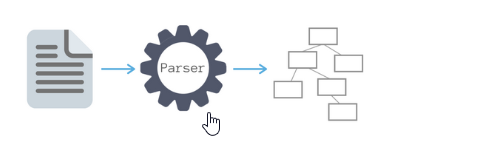

Создаем быстрые продающие
интернет-магазины
Ваш магазин проходит 9 этапов разработки,
четыре из которых созданы для ваших продаж
Техническая разработка
Этап 1. Функции — что будет уметь Ваш магазин
Создадим магазин с набором до 150 модулей с гибкими настройками функций.
Возможна доработка любого модуля под индивидуальные задачи.
Сегодня разрабатываем на основе: наша версия OpenCart 3.0 + самая быстрая тема оформления FireStore, FireStore Premium или Fashion.
Этап 2. Дизайн — как будет выглядеть ваш магазин
Предлагаем три варианта создания дизайна:
Предлагаем три варианта создания дизайна:
- на базе наших быстрых шаблонов;
- на базе шаблона с индивидуальными элементами — например, отрисовкой главной страницы или карточки товара;
- полностью индивидуальный дизайн.
Этап 3. Наполнение и обмен данными
Организуем наполнение или синхронизацию данных любым необходимым вам способом:
Организуем наполнение или синхронизацию данных любым необходимым вам способом:
- Синхронизация с системой 1С:Предприятие, ТоргСофт, МойСклад, Класс365, Brain API и т.д. Настроим быстрый и точный обмен данными для оптимизации бизнес-процессов. Автоматизированный процесс обмена обеспечивает периодическую выгрузку каталога товаров в интернет-магазин, и заказов покупателей из магазина в 1С. Детальнее…
- Импорт данных с файла поставщика. Автоматическое добавление/обновление товаров с прайслистов поставщика форматов: XML, YML, XLSX, XLS, CSV. Файлы поставщика можно загрузить единоразово или загружать периодически в нужное время. Детальнее…
- Парсинг товаров с сайта-донора. Позволяет автоматически наполнить интернет-магазин актуальными товарами (с ценами, описаниями, изображениями) и категориями с сайта-донора. Детальнее…

Этап 4. Настройка сервера
Помогаем выбрать надежный хостинг. Настраиваем сервер и разворачиваем на нем магазин.
Этап 5. Подготовка к запуску
Проводим финальное тестирование. Сдаем проект с демонстрацией экрана онлайн. Настраиваем работу интернет-магазина на безопасном зашифрованном протоколе. Обучаем основам управления магазином.
Разработка для ваших продаж
Этап 6. SEO-структура каталога товаров
SEO-структура каталога товаров определяет, сможете ли вы получать бесплатный трафик из поисковых систем, а также служит для привлечения быстрого платного трафика по самой низкой цене за клик. Правильно созданная структура состоит из сотен посадочных страниц, которые максимально релевантны под тысячи низко- и среднечастотных запросов.
Вы получаете тысячи оптимизированных страниц, которые значительно снижают цены за клик в рекламе на поиске. Через 3-7 месяцев продвижения они приводят покупателей бесплатно.
Этап 7. Внутренняя оптимизация
Выполняем рекомендации поисковых систем для веб-мастеров, чтобы магазин хорошо индексировался и правильно воспринимался поисковыми монополистами. Уже на этапе разработки мы прописываем мета-теги, делаем микроразметку, настраиваем самую быструю карту сайта и т.д. по списку.
Вам не придется тратить деньги на SEO-аудит и исправление кода под продвижение после запуска магазина. Направьте эти деньги, например, на Google Shopping и получите первых покупателей уже через несколько дней.
Этап 8. Реклама в Google Shopping
Сразу после запуска интернет-магазина настраиваем рекламные кампании в Google Shopping и приводим первых покупателей. Когда ваши покупатели будут вбивать в поиске названия ваших товаров, Google покажет ваши товарные объявления выше всех результатов поиска.
Кроме Google Shopping можем настроить товарную рекламу и в социальных сетях Facebook, Instagram. Узнать детальнее...
Этап 9. Ускорение скорости загрузки страниц
Скорость загрузки страниц мобильной версии сейчас является КЛЮЧЕВЫМ фактором в ранжировании сайтов поисковиками Google.
3 решения для ускорения загрузки страниц:
-
Улучшение показателей по Google PageSpeed Insights (Core Web Vitals). Летом 2020 г. Google ввёл новые алгоритмы, согласно которым оценка скорости загрузки страниц любого сайта определяется по трем показателям, которые сейчас называются "Core Web Vitals":
- LCP (скорость загрузки основного контента),
- FID (время ожидания до первого взаимодействия с контентом),
- CLS (стабильность верстки и элементов, не препятствующих взаимодействию с контентом). Детальнее…
- PWA (Progressive Web App). Прогрессивное мобильное приложение для вашего интернет-магазина. Они поддерживаются браузерами, установленными у 93% пользователей. Именно PWA сейчас рекомендует Google, это самое последнее новшество, самая прогрессивная технология, которая решает все вопросы удобства использования интернет-магазина с мобильных устройств. Детальнее…

- AMP (Accelerated Mobile Pages). AMP страницы представляют собой упрощенные версии страниц интернет-магазина, которые загружаются в разы быстрее чем стандартная мобильная версия сайта. Скорость отображения данных страниц увеличивается в первую очередь за счет упрощения элементов сайта, специальной вёрстки и кэширования. Детальнее…